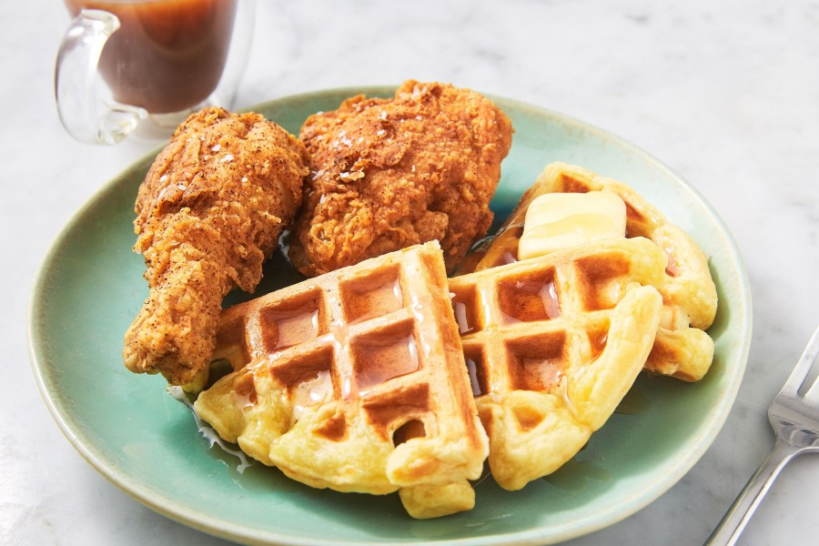

Home
Chicken And Waffles
Chicken And Waffles

you're probably thinking "Do chicken and waffles go together?" And all I have to say to that is: yes, they do.
they didn't become popular until the Harlem Renaissance in Harlem, New York in the 1930s at the Wells Supper Club owned by Joseph T. Wells. Musicians leaving work late at night or extremely early in the morning would fill Wells Supper Club and this sweet and savory, breakfast-and-dinner combo kept every belly satisfied.
Ingredients
- 4 eggs
- 1/4 cup heavy cream
- 2 tablespoons cayenne pepper
- 1 tablespoon salt
- 1 tablespoon ground black pepper
- 2 cups all-purpose flour
- 1 cup cornstarch
- 1 tablespoon salt
- 1 quart peanut oil for frying
- 8 chicken tenders
- 1 cup mayo
- 1/4 cup maple syrup
- 2 teaspoons prepared horseradish
- 1 teaspoon dry mustard powder
- 12 slices bacon
- 8 thin slices Cheddar cheese
- 8 plain frozen waffles
Directions
- Whisk together the eggs, cream, cayenne pepper, 1 tablespoon salt, and black pepper in a large bowl. In a paper bag, shake together the flour, cornstarch, and 1 tablespoon salt.
- Dip the chicken into the beaten egg mixture, then place into the flour mixture and shake to coat. Place the breaded chicken onto a wire rack; do not stack. Let the chicken rest for 20 minutes to allow the coating to set.
- Combine the mayonnaise, maple syrup, horseradish, and mustard powder in a medium bowl. Place the bacon in a large, deep skillet, and cook over medium-high heat, turning occasionally, until evenly browned, about 10 minutes. Drain the bacon slices on a paper towel-lined plate.
- To assemble the sandwiches: Place 4 waffles on a cookie sheet, top each waffle with 2 chicken tenders, 3 slices of bacon, and 2 slices of Cheddar. Broil the sandwich for a 3 to 5 minutes until the cheese melts. Spread 3 tablespoons of the maple mayonnaise on the remaining 4 waffles and place on top of the sandwich.
.